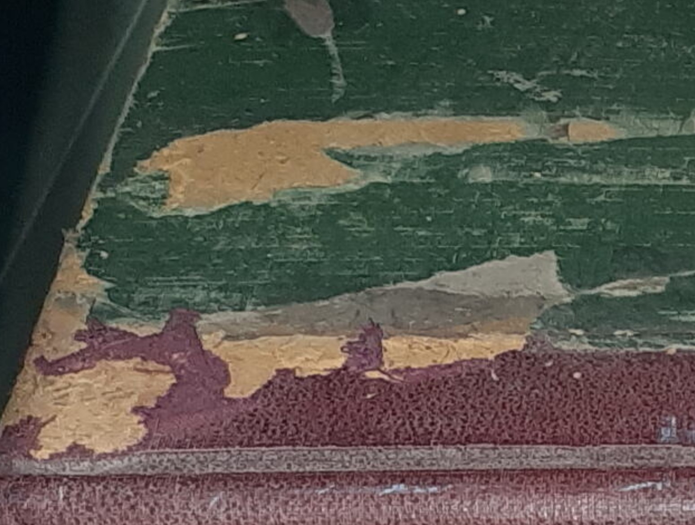

Example of abrasion damage on a bound volume
Abrasion
Description
A gradual loss of surface material due to rubbing, scraping, or wear. An abrasion may look like a roughened surface, a matte area, or a group of scratches. It may be done intentionally to smooth or clean a surface or it may be unintentional caused by poor housing, resulting in damage.
Treatment Notes
- Gentle surface cleaning to ensure the surface area is stabilised.
- Rehouse if abrasion is caused by unsuitable storage conditions.
Materials Affected
Paper, Books, Textile, Metal